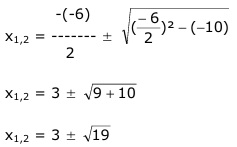
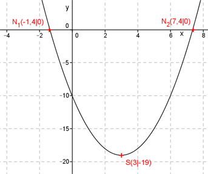

Aufgabe 41 Welche Koordinaten haben der Scheitelpunkt S und die Nullstellen N der folgenden Funktion? y = x2 - 6x - 10 Ermitteln der Scheitelpunktform: Quadratische Ergänzung: y = x2 - 6x + 9 – 9 - 10 mit x2 - 6x + 9 = (x - 3)2 y = (x - 3)2 - 19 S abgelesen: S(3|-19) Nullstellen: y = 0 0 = x2 - 6x - 10 p, q – Formel : p = -6 ; q = -10  x1,2 = 3 ± 4,4 x1 = 3 – 4,4 = -1,4 x2 = 3 + 4,4 = 7,4 N1(-1,4|0) ; N2(7,4|0) 